学会滑板是我在去年初定下的新年计划之一，但是一直到去年十一的时候我才终于买了人生第一块滑板，到现在过去 3 个多月了，差不多算是入门了吧，所以写篇博客记录下自己的一些心得体会。希望这篇博客能给那些不怎么了解滑板的人普及到一些关于滑板的基础知识，以及给刚开始学习滑板的新人一点 tips 作为参考。
了解滑板
滑板最开始是由 50 年代加州的冲浪爱好者为了在岸上练习冲浪制作出来的，后来在街头受到越来越多小孩子的青睐，慢慢地开始有公司专门生产滑板，又经过多年工业上的演化与工艺改进，才发展成现在的样子。
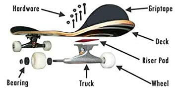
滑板基本组成
虽说现在我们买的滑板基本都是整块组装好的，但是我觉得作为一名初学者学习一下滑板的基本组成部分还是很有必要的（比如和人聊天的时候能听懂别人在说啥(-_-)ゞ゛）。看上面这张图，我们可以对滑板的有一个大致的了解。从下到上，依次是：
- Wheel，轮子。应该是初学者首先需要了解的部分了，不同的轮子决定了你能在什么路面上玩滑板，以及你的速度，滑行时轮子与地面摩擦产生的噪音等等。推荐看下这篇文章：如何选择适合你的滑板轮子？
- Truck，桥或者支架。桥是连接板面和轮子的部分，传递了从板面到轮子的重量。通常来说，桥的质量的好坏决定了一块滑板的使用寿命。如何选择合适的滑板桥？
- Bearing，轴承。轴承是把轮子固定在桥上的金属固件，轴承也会影响滑板的使用寿命以及轮子的转速。
- Riser Pad，贴边。相比贴边，我觉得一般更需要了解的是 PU 桥垫。比如如果你的双翘板装了公路轮，那么就需要更换桥垫，因为公路轮直径更大，需要用更高的桥垫把板面和轮子的距离垫高，否则很容易发生轮子触板的刺激画面，轻则摔破相，重则车祸。所以，玩滑板安全才是第一位的。
- Deck，板面。早期的滑板（Old-school board）板面都比较宽，有的可能还带有弧度，所以做动作特别难，而现在的滑板，宽度、长度基本都差不多（20cmx80cm），材料也大同小异（一般 7 层枫木），只要不是太不爱护，比如经常弄湿或者暴晒、人为破坏等等，板的使用寿命还是很长的。所以挑板面的话只要看颜值就可以了。
- Hardware，桥钉和螺帽。用于固定板面以及桥，一般只有换砂纸的时候才会需要拆开它们。
- Griptape，砂纸。主要用于增加鞋底和板的摩擦力。砂纸其实有利有弊，利是增大摩擦力做动作更容易了，弊是对鞋子伤害大，费鞋。玩滑板一段时间后，尤其是开始练动作之后，相信你会更有体会。
好了，说了这么一大堆，如果你没耐心看完也没关系，只要知道滑板大概有这么些东西就可以了，更详细的资料我也懒得去搜了。其实别看滑板这么简单的东西，关于每个构件都可以写出好几篇文章，而且某些部件也是需要高精细的制作工艺才能制作出来的（比如轴承），这也是为什么许多好的滑板都是国外进口的品牌 。当然，市场也是一个因素，国内玩滑板的人少生产厂家也少，不过正因如此，才需要有人去介绍、推广这项运动呀(๑•͈ᴗ•͈)。
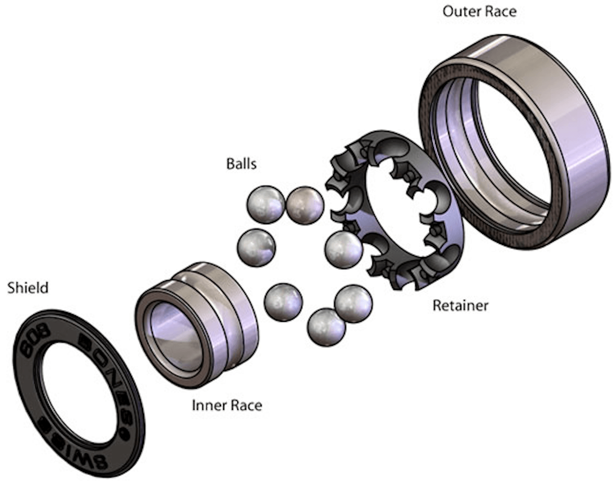
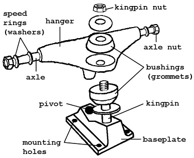
滑板种类
一般来说，滑板可以分为三个大类：鱼板、双翘、长板。
鱼板
鱼板也就是人们常说的 Cruiser，是比较适合初学者练习的滑板，它的特点是轮子比双翘大，而且只有板尾是翘起的（有些可能还没有板尾），但是比较适合滑行。
鱼板一般分为小鱼板和大鱼板，他们之间唯一的区别只是体积大小的不同。小鱼板中有一些是塑料板，很轻，价格也比较便宜，但是我觉得并不适合初学者。相比小鱼，我更推荐大鱼板，因为它的上板难度更低。板面面积大，不用怕脚没地方放，而且通常来说也更稳当一点。另外，大鱼板也非常适合刷街代步，更容易体会到滑行的乐趣。
大鱼板推荐指数：★★★★
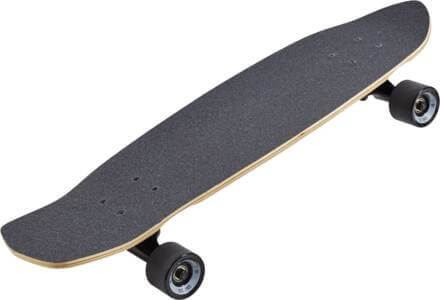
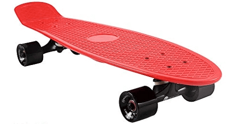
双翘
当我们谈论滑板时，大多数人指的都是双翘。它既可以滑行，也可以做出你在电视、视频中看到的各种炫酷的动作。你可以自己购买各种部件组装出自己喜欢的双翘板，不过对于初学者来说推荐直接购买整板就可以了。双翘上手难度适中，对于初次接触滑板的人来说，算是一个还不错的选择。
双翘推荐指数：★★★
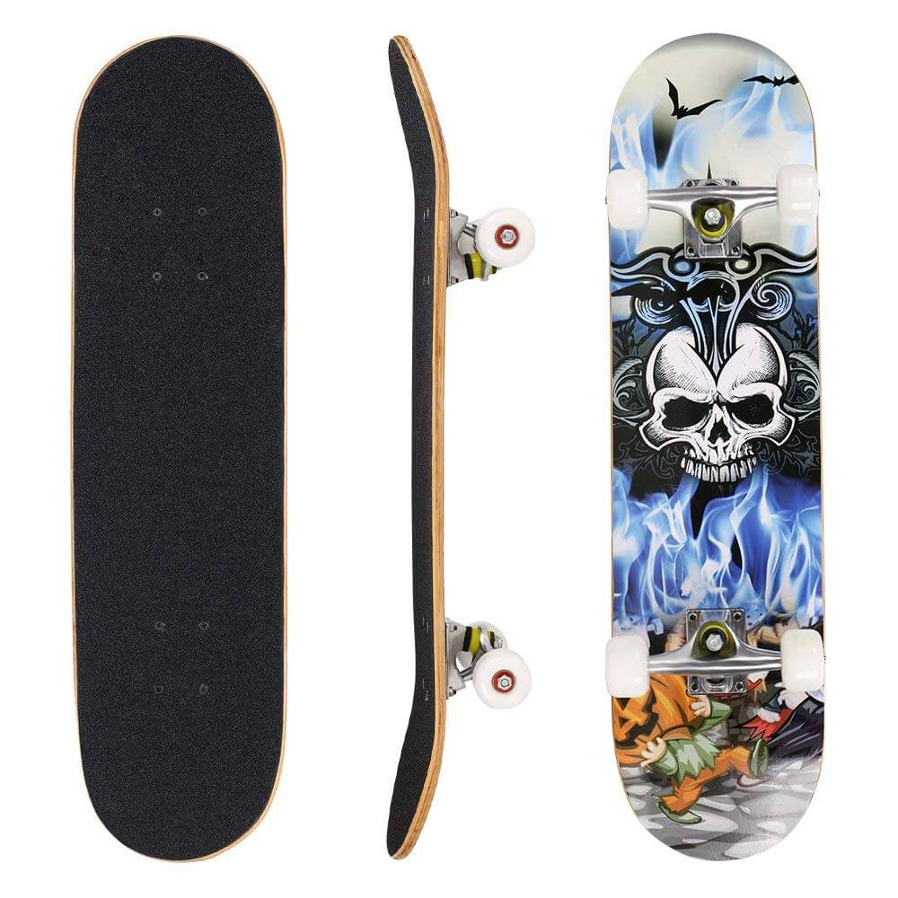
长板
长板的最大的特点就是长（笑），其次是轮子更大、更软，所以速度更快，滑行时间也更长，比较适合玩速降，最能享受到滑行的乐趣，常常可以看到小姐姐在长板上通过踩板做一些简单的小动作，而且玩法也主要围绕在滑行上。所以，如果只是想要学会滑行的话，无疑长板是最佳的选择。但是长板的缺点也很明显，那就是不方便携带，而且想要玩得爽的话就必须寻找人少且长的路段，最好还要带一点坡度。而如果是鱼板或者双翘的话，只要找个小广场就可以玩得很开心了，如果是双翘练动作的话更是小区里随便找块平地就可以了。
长板推荐指数：★★★
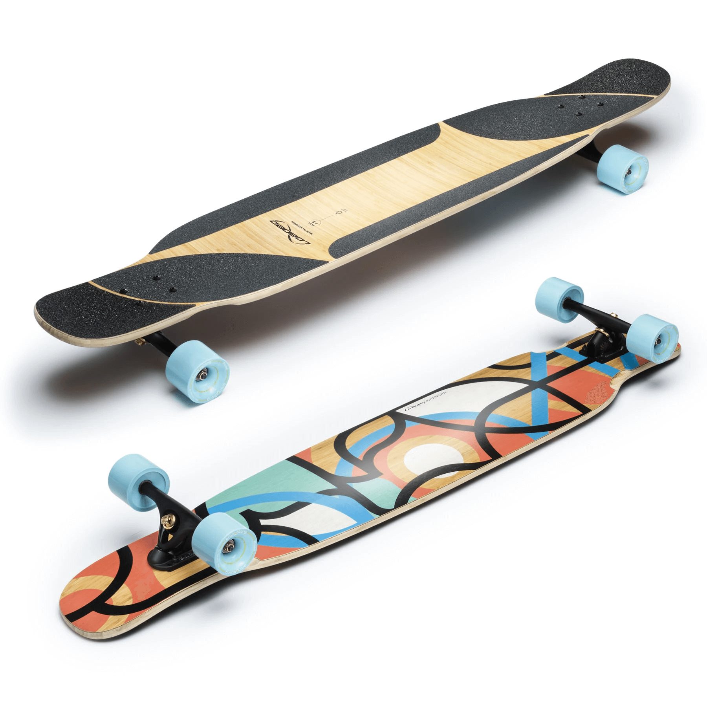
哪种滑板适合我？
相信经过上面的介绍就不难发现，每种滑板其实都有自己的优劣势，我们可以根据自己的需要以及不同的使用场景来进行选择。从上手难度来看，由难到易：双翘>大鱼>长板；从滑行能力上看，长板>大鱼>双翘；从价格上来看，由高到低：长板>双翘>大鱼；从可玩性来看，三者各有各的玩法，各有各的优势。
综合来看，我比较推荐初学者从大鱼板入手，大鱼是综合能力比较不错的滑板，无论是滑行还是做一些简单的 trick 都没问题。不过如果你住的附近有滑板店，最好还是去店里试试。当然要是不差钱，可以三种板都买一块，用长板学习滑行，用鱼板出门刷街，等滑得不错了再用双翘练动作。
对于大多数人而言，直接买新的板就可以了，不需要自己去组装，因为老实说只要质量过关，各个品牌之间的差别很小很小，滑板最重要的是你要自己去感受、去玩，只要能玩得开心就可以了。推荐看下这个视频：Do These 10 Things Make A Difference In Skateboarding?
开始前的准备
为什么学习滑板？
在学习滑板之前，首先要确定你学习滑板的目的是什么。
因为它很酷？No, no, no! 仅凭这一点你是很难坚持下去的，很可能连基本的滑行都没学好就中途放弃了。
因为觉得好玩？嗯…这一点倒是必须的，但是我觉得还不够。如果你能通过玩滑板获得一些实际的『好处』，你才更能坚持下去。最常见的好处是，以滑板作为代步工具，比如你是大学生的话，可以尝试滑滑板去上课，如果你已经工作了就用滑板去其它以前需要步行的地方，比如用滑板代步去小区附近的电影院。总之给自己一个足够强烈的理由，让自己能够坚持下来。
其实学其他东西也一样，如果我们没有强烈的愿望，那么即使方法再好，我们也很难学会。当然，除了愿望和方法之外，勤奋练习也同样重要。
如果你觉得以上对你来说都 OK，那么请继续往下阅读。
场地的选择
对于初学者来说，我推荐最好选择一个人少的广场，这样当你练习滑行的时候不用担心会撞到别人，而且摔跤的时候也不会觉得太丢脸（一开始摔跤肯定会觉得有点丢脸但是等摔习惯之后就好了😆）。除此之外，还需要观察下地面是否平整，如果是坑坑洼洼或者地面有很多裂缝的那种就不太适合练习了。一般情况下，场地表面越光滑越好，但是也不能太光滑，因为如果你的轮子硬度比较高，在这种地板上很容易打滑，尤其是地面上有水的时候。
佩戴护具
不要觉得戴护具会显得自己很菜，一开始菜不是很正常吗？作为初学者最要命的就是逞强以及太自信，戴好护具可以帮我们避免很多不必要的受伤。还有，在学习滑板的过程中一定是会摔跤的，摔跤可以说是学习滑板的第一课，而护具则是你摔完跤之后还能拍拍屁股站起来继续练习的保证。
护具还能帮助你学会如何正确地摔跤。没错，即使是摔跤也是需要学习的，推荐看下这两个视频：How to fall without getting hurt? 和 How to correctly fall in skateboarding。正如视频里说的，最好的滑板高手同时也是最擅长摔跤的。在练新动作的时候，你必须学会如何在摔跤的时候保护好自己的关键部位，尽可能降低因为突然停下时的身体动能给自己造成的伤害，学会分散冲击力到身体的各个部位，然后形成摔跤时的肌肉记忆，这样在不同场景下，你的身体会自动选择最佳的摔倒姿势（比如翻滚等）来保护自己。肌肉记忆这个词接下来可能还会被提及多次，因为滑板中所有的技巧、动作都是靠我们的肌肉记忆完成的。
滑板基础
和学习其它运动一样，玩滑板同样需要先打好基础，滑板中最基本的动作是滑行、荡板以及刹车。
滑行
滑行是滑板基础中的基础。很多人一上来就想学动作，然后经常摔跤最后觉得滑板太难就放弃了。其实如果能稍微有点常识，了解下学习曲线就不会吃这种亏了。
- 确定惯用脚
在开始练习滑行前，首先要确定你的惯用脚，人有左撇子和右撇子，对于玩滑板的人来说同样如此。最简单的确认方法是身体面向前方倒下，你的身体会自然迈出一只脚阻止倒下，首先迈出的那只脚就是你的惯用脚，或者你也可以想象自己在冰面上，然后跑动一段距离再迈出一只脚利用惯性向前滑行停下，看自己哪只脚在前则那只脚就是你的惯用脚。如果你的左脚是惯用脚那你就是 regular，否则就是 goofy。滑板里 regular 和 goofy 都比较常见，民间的说法是 60% 是 regular，40% 是 goofy。
- 慢速滑行
确定了你的惯用脚之后就可以开始练习滑行了。首先要确定自己脚的位置，一般把脚放在四颗桥钉处，最远不超过第一排桥钉的位置。如下图（请原谅我的神仙画技）。
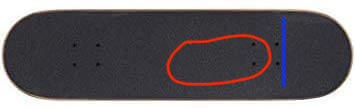
这样，你的身体重心就自然地落在了滑板的前半部分，这点对于初学者来说特别重要，因为掌握了重心的位置你才能保持平衡。让重心保持在前，也能让你的另一只脚更容易发力向前滑行，而且即使你觉得自己要摔倒了，因为重心在前，你可以很自然的下板然后利用惯性向前跑动一段距离，从而避免摔跤。如果重心在后，一旦你的身体失去平衡，你很难保证自己不摔跤。这点可以自己慢慢体会。简单来说，向前滑行的时候，保持重心在前。
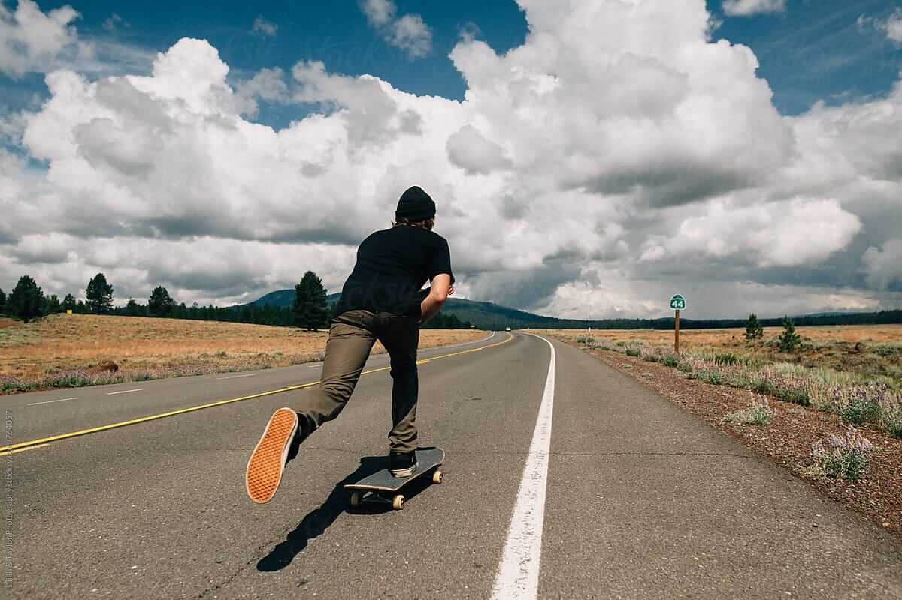
另外，一开始滑行的时候，速度不要太快，保持和走路的速度差不多，前脚在板上尽量弯曲膝盖，让自己的身体的重心降低。然后后脚慢慢踩地面发力，可以一点点踩，感受身体随着滑板向前一点点移动的那种感觉。
学会单脚慢速滑行并不难，一般 1~2 天就够了，平衡感好的人可能半个小时就能学会。
- 两种脚位
等你适应了一只脚在板上滑行之后就可以尝试另一种脚位了，那就是双脚平行的站姿。因为我们只有加速的时候才会一只脚在板上，当不加速的时候，另一只脚需要上板休息，这时我们就需要改变站姿，改成双脚平行的站姿（也叫 Cruising Position），这样我们才能轻松在板上保持平衡。
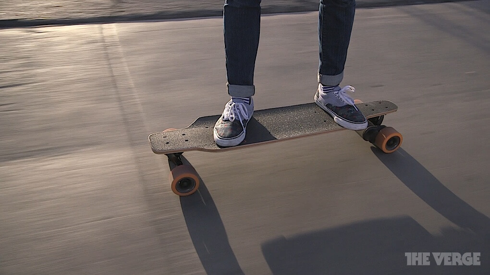
同样地，一开始你可能根本就不敢两只脚同时上板，所以推荐最好先在墙边或者找根柱子，扶着墙或者柱子熟悉一下双脚站在板上的感觉，然后再以这种站姿尝试慢慢向前滑行，等到差不多熟悉这种感觉了，再尝试在滑行中上板，然后切换脚位，也就是从加速脚位切换到滑行脚位。切换脚位看似简单，但是也是需要不少时间练习的。
- 转向
滑板中转向反而是最简单的部分，只要通过向一边施力，滑板就会向那边慢慢转过去，当然如果是新的滑板，由于螺母转得比较紧所以可能转的角度比较小，但是等滑板使用一段时间之后 bushing 松了转向就会变得越来越容易，我们也可以自己把螺母调松，但是不推荐初学者这么做。
另一种转向方式是 kick turn，也就是通过踩板尾然后翘起板头转向，这种转向方式适合场地较小转向空间不足的时候。Kick turn 对于初学者来说并不推荐，等到学会荡板之后自然就会 kick turn 了。
当你能够自如切换脚位以及转向之后，基本就算是学会滑行了。滑行的练习特别重要，它可以帮助你学会在滑板上保持平衡，学会如何控制自己的身体、利用惯性等等。掌握这部分所需要的时间也因人而异，因为涉及到平衡感、自信心（特别重要）等因素，一般可能需要 3~4 天吧。
荡板
荡板应该是初学者最最需要花时间练习的技能，它看似无用，但是所有技巧都始于它。荡板说来简单，就是通过不停左右转向从而获得向前进的动力（有人说是通过左右压板，但其实原理都差不多，都是为了获得向前的 momentum），但是想要完全掌握可能需要很长的时间，我前后可能花了一个多月（虽然不是每天都练）才算是学会了荡板。这部分我觉得真没什么诀窍，自己看几个视频然后多练多练多练。只要每天都花点时间练习，重复重复再重复，形成腿部的肌肉记忆，到后面荡板就会像走路一样自然了。
刹车
对于初学者来说，一开始的刹车方式无非两种，一种是用后脚戳地，一般戳个几次就停下了，另一种是直接从板上跳下来。这两种方式都是凭直觉的，但是为了应付复杂的场景还有保护自己和滑板，我们就需要学习一些更好的减速以及刹车的技巧。
- 脚刹
这应该是最实用的刹车方式了。简单来说，就是一只脚保持在板上（切换成单脚向前的站姿），然后后脚悬空用脚后跟摩擦地面，然后慢慢加大力度使得速度逐渐减慢，最后再踩实停下来。这种方式既可以用于刹车也可以用于减速。
使用这种方式刹车或者减速的前提是，你必须熟练掌握单脚滑行的技巧。当你可以单脚在板上滑行 4、5 秒，再开始练习这种刹车方式就事半功倍了。单脚滑行的诀窍同样是保持重心在前方，然后身体前倾，膝盖弯曲，后脚悬空放在身后或者贴近身体，利用后脚或者不断调整身体姿势保持平衡，还有觉得不稳的时候尽量往前倒（不要怕会脸刹，正常人基本下意识的都会保护自己的脸的，往后倒才是真的可怕）。
- 尾刹
尾刹通过将滑板前端（板鼻）翘起，利用滑板的尾部或者将后脚探出一部分（前脚掌或后脚跟）摩擦地面来进行刹车。尾刹相对脚刹来说难上很多，建议至少先学会荡板后再来练习尾刹，因为尾刹更考验身体的平衡性以及你对滑板的控制能力。初学者对滑板的操控能力没那么强，如果一上来就开始学尾刹，很容易摔跤。
虽然如此，但是还是想分享一些我练习尾刹时摔跤好多次才总结出来的经验~p(´⌒｀｡q)
- 先练习荡板（Tic Tac）
荡板好像和尾刹没什么关系，但是从我的经验来看，如果当初学会荡板再来练习尾刹，一切会简单很多很多倍。因为尾刹其实靠的是你后脚踩板尾，控制板尾接触地面的力度，不能一下踩实，因为反方向加速度太大你会往后仰然后摔倒，也不能踩的太少，因为这样就成了 manual，而且一开始你根本做不了 manual，很可能就做成了翘一下板鼻而已。所以练好荡板就相当重要，可以让你学会如何精准地控制踩板尾。另外，学习荡板对学习 manual 也有帮助。荡板一般要练到可以轻松上 10 几度的坡才算过关。
- 练习原地 180 度转
当我们使用尾刹时，大多数时候是想要转向，所以会做出旋转 180 度并画圆弧的动作。为了适应这种动作，我们最好先熟悉原地 180 度转。练这个动作的前提是你对荡板掌握得很好，而且一开始学习的时候一定要佩戴好护具，因为一开始很容易摔跤。
首先练习荡板，找找感觉，然后站在板上，膝盖微曲，展开双手与肩膀成直线，与板面平行，然后开始做转肩膀的动作，重心稍微偏向轴心一侧（假设右脚在板鼻，左脚在板尾，同时向左转 180 度，则重心稍微偏向左脚），转肩膀的同时目光定位到需要将板转过来的位置，再利用肩膀带动腰部转动，最后只要依靠腰部的惯性带动右脚把板转到目标位置就可以了（此时你的肩膀已经转过来了），你的右脚几乎不需要发力。
描述起来好像有很多动作，其实整个过程是一气呵成的。一开始练习的时候，你可能只能旋转 45 度角，但是不用担心，随着练习次数的增加你会越来越熟练，角度也会转得越来越大，甚至连转 360 度都可以轻轻松松。
- 用前脚尖接触地面画圆弧
这个应该不算经验，应该是大多数人用前脚掌做尾刹时（不讨论后脚根尾刹，因为会难上很多）自然而然做出的动作，因为板尾刹车会让我们的身体重心偏向一方（向左或者向右），此时滑板就会以板尾一侧为轴心做旋转。而如果仅凭板尾接触地面，由于板尾比较光滑，摩擦力较小，所以旋转幅度就比较难控制，但是如果我们探出前脚尖，就可以利用鞋底摩擦地面来增加摩擦力，而且用脚底踩地面的力度比用板尾摩擦地面的力度更容易控制一些。另外，这也可以保护板尾。
一开始你可能会对这种脚位不熟悉，觉得很别扭，导致不敢探出前脚掌。可以先尝试探出 1/3 前脚掌，使用后脚根作为发力点。然后以这种站姿先练习原地转 180，等到熟悉之后，再尝试速度比较慢的情况下小角度用前脚尖轻点地面进行转弯，一开始可能需要轻轻点两三次才能转成一个 180 度的弯，但是等到熟悉了这种感觉之后就可以尝试用前脚掌摩擦地面并画弧了。
另外还有一个要注意的点是前脚的站位，最好不要超出板面，只是用前脚掌轻轻点着板面。为什么要这样？因为通常来说，我们的前脚掌对力度的控制更精细一些。在使用尾刹的时候，后脚的前脚掌需要摩擦地面，前脚的前脚掌则负责控制抬板鼻的高度，不能抬太多否则后脚容易踩实然后摔倒，也不能抬太少否则你很难保持身体的平衡。所以一定要熟悉这种后脚的前脚掌露出板面、前脚的前脚掌轻轻贴着板面控制方向的站姿。最好的做法是，反复练习使用这种站姿去荡板、原地转 180、小速度转向，等熟悉之后再去练脚刹就会有种「脚」到擒来的感觉了。
最后说下为什么要后脚跟发力，其实道理很简单，当你使用前脚掌发力的时候，虽然更容易控制力度，但是时间长了很容易累（前脚掌肌肉长时间保持紧绷、僵直了的缘故），而用后脚跟则不会有这个问题。只要熟悉了控制后脚跟往下压的力度，再配合前脚抬板鼻的高度，你会发现这样省力很多。不信你可以试试先用前脚掌作为发力点荡板，一直荡到脚有点酸为止，然后掉头再用后脚跟荡板，你会发现自己回到出发点后却依旧不觉得脚酸。但是这种站姿下前脚还是会容易感到累，所以还有一个技巧是前脚的位置尽量靠近板中间。不过这样做的前提是，你已经非常熟悉使用后脚跟荡板、转向了，否则你会觉得这样很容易脱板。
- 保持双肩和板面平行
也就是胸口要面向板的一侧（其实准确来说，应该是朝向重心的一侧，比如如果你是往左侧画弧，则重心偏向左侧，那么胸口自然也应该朝左侧，这样比较容易保持平衡）。这算是一个小 tip 吧，我一开始练荡板的时候养成了脸朝前看的坏习惯，然后练习尾刹抬板鼻的时候，习惯性地会脸朝前、转肩膀，这种姿势在尾刹的时候是很难在板上保持平衡的，如果速度比较快一旦板尾或前脚掌接触地面身体就会失去平衡，好在我后来通过不断看视频发现了这个问题。
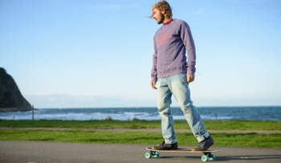
虽然一开始看别人的教学视频也听到要如何如何，但是只有等自己真正实际去试的时候才会发现：原来他说的是这个意思啊。所以如果我这里给出的技巧和建议你也只是看看而已，那么并不会有什么卵用，只有在实践中去验证，你才能真正体会到我说的是什么意思。
- 横刹
脚刹和尾刹一般只适用于滑行速度不是太快的情况下，尤其是尾刹，如果速度很快还用尾刹无异于自杀。当速度比较快的时候一般就只能靠横刹减速了。所谓横刹就是在滑动过程中后脚搓板尾，将滑板横过来，使轮子横向摩擦地面从而达到减速的目的。教学视频可以看下这个：横刹
横刹我目前还没学会所以就不多说了，而且初学者滑行的速度一般不会太快所以也用不到横刹。
关于更多的刹车方式，可以看下这个视频：10 Ways to Stop on your Skateboard.
进阶地图
等你学会滑行、荡板、刹车之后，恭喜你，你已经算是入门级滑板选手了！接下来就可以练习更多诸如 Ollie、Pop shove it、Kickflip 等动作了，相信如果能走到这一步，你也应该已经爱上了滑板了，所以请继续练习，并且把它推广给更多的人，让他们也能加入并且爱上这项运动。
目前我也才刚刚达到 Ollie 的水平，所以无法给出更进一步的建议，这里只能先列出一个大致的进阶地图，希望和大家一起不断进步~ (•̀ᴗ•́)و ̑̑！
1 | └─Shove it |
还有诸如 Manual、Slide、Rail Stands 等等的小技巧，可以在学习以上这些动作时同步进行练习。
视频资料
对于初学者，推荐先看下这篇博客，我当初也是看了它才打算写一篇博客来为初学者科普的：The Beginner’s Guide to Skateboarding。网上的视频资料很多， YouTube 以及 Bilibili 上都有很多视频博主分享的优质的学习滑板的视频，这里我就推荐一些我觉得比较好的 YouTube 频道吧：
- Braille Skateboarding，比较出名的滑板教学品牌了，著名的滑板「传教士」Aaron Kyro 也是其中的一员。
- VLSkate，我很喜欢看他的视频，看他教的一些有趣的小技巧，虽然并学不会ㄟ( ▔, ▔ )ㄏ。
- Skateboard Bruh，除了教学之外，也会讲一些滑板周边的话题，我很喜欢最近的这个关于滑板界一些现状的视频（不要吐槽这个令人尴尬的标题´͈ ᵕ `͈）：26 Skateboarding Facts You Didn’t Know
- John Hill，同样很喜欢他出的教学视频，语言比较通俗易懂。
- openSource(skateboards);，该频道除了教滑板还教你如何设计和制作自己的滑板，酷到没朋友。
另外，还有一些我很喜欢的玩长板的频道：
- Alternative Longboards，主要是长板速降，他们的视频背景都很美，比如这个。
- Juan Rayos，这个频道有一组女孩在全世界各处玩长板+旅游的视频，太让人羡慕了。
- 고효주HyojooKo，国内也很出名的人称长板女神的高孝周的 YouTube 频道，看她玩长板会让人心情明亮起来~(❁´‿`❁)✲ﾟ